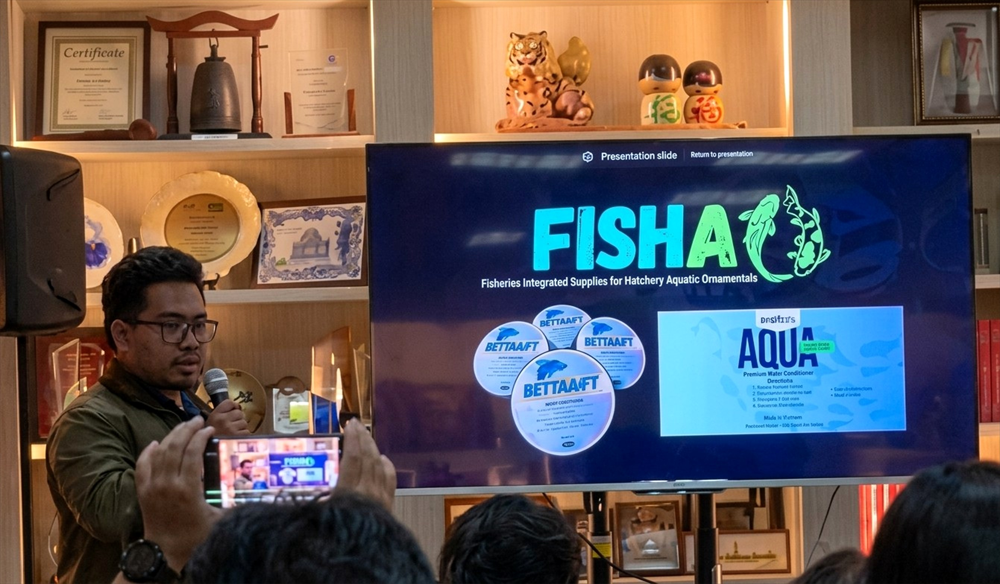
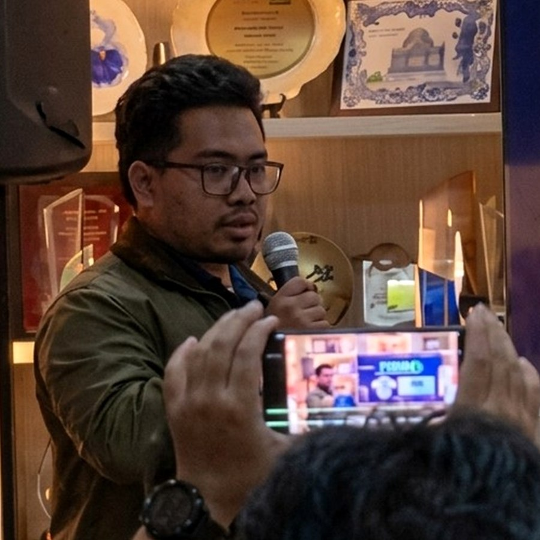

Turning fisheries waste into real solutions.
We convert low-value fisheries commodities into fisheries solutions. So far, FISHAO has turned more than 500,000 kg of wasted oyster shells into sustainable water conditioner for aquariums.


What we do
From wasted shells to sustainable solutions
Fisheries commodities that are treated as low value still have something to give. We turn them into products that help aquarium keepers and the fisheries around them.
Low-value commodity
Wasted oyster shells from fisheries that would otherwise go unused.
Converted by FISHAO
We recover the shells and turn waste into something useful.
Sustainable water conditioner
A water conditioner for aquariums, made from recovered oyster shells.
Ornamental fish
Healthy, carefully handled fish for home aquariums and hobbyists.
Aquarium supplies
The everyday supplies fish keepers need to look after their tanks.
Sustainable by design
Built by a licensed fisheries professional, with fisheries sustainability at the core.
Recognition
Backed by wins on stage

Meet the founder
Joshua Camba
Joshua grew up in a fishing community on Manila Bay. In November 2024 he won the Bataan startup pitching competition and turned the idea into FISHAO.
- NOVEMBER 2024Won the Bataan startup pitching competition and started FISHAO.
- 2025Defended the title and joined the founders panel at Bataan Startup Day.
- TODAYMaking sustainable water conditioner from wasted oyster shells, and growing from Orani, Bataan.
The name says it all: FISheries Integrated Supplies for Hatchery Aquatic Ornamentals.
Photos
FISHAO on stage
Sharing the FISHAO story with the Bataan startup community.

Let's build sustainable fisheries together
Questions about FISHAO, our water conditioner, or want to work with us? Send us an email or give us a call.
Meet the founder →